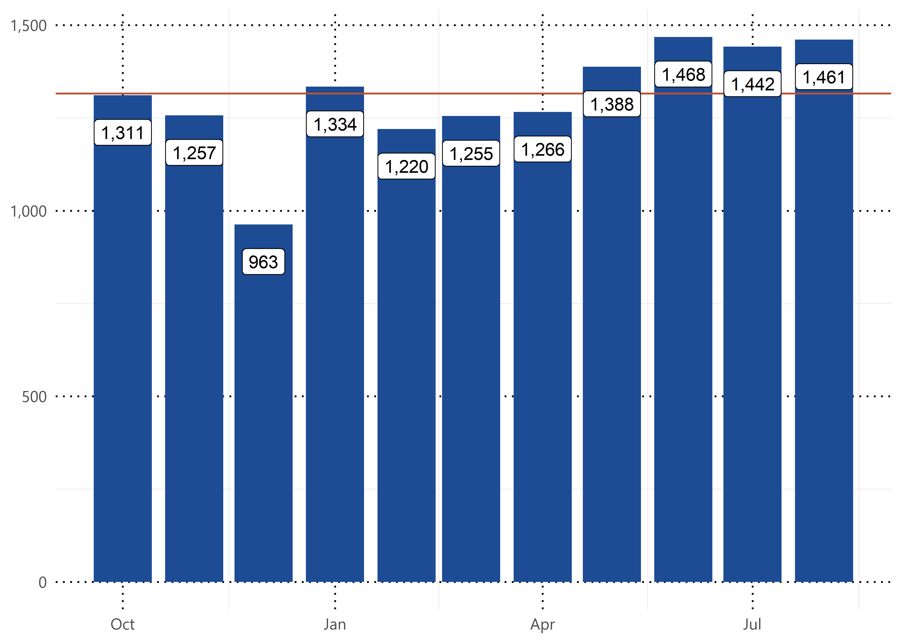
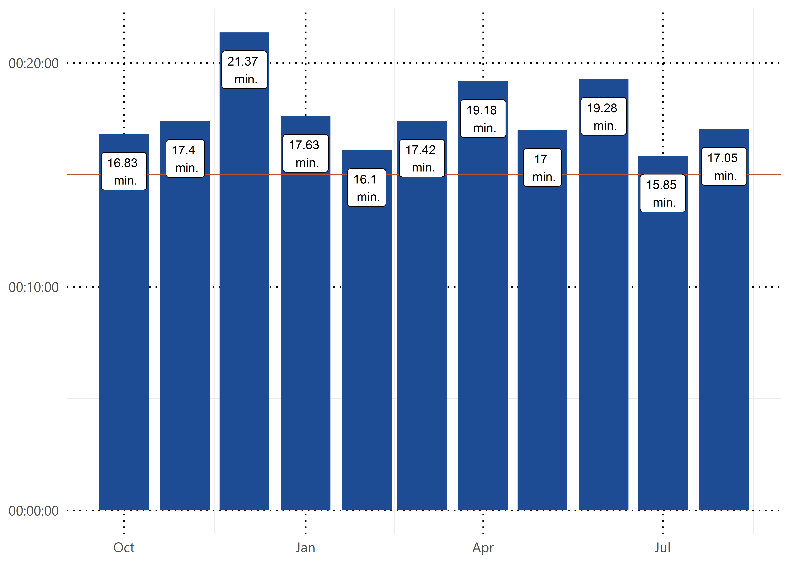

Guilford County Budget
Welcome
1
Enterprise Metrics
1.1
Dollars Spent on Overtime
1.2
Overtime Hours Paid
1.3
Hours Not Worked
1.4
Hours Lost Due to Work Related Illness and Injury
1.5
Lost Time Injury Rate
2
Animal Services
2.1
Context
2.2
Monthly Call Volume
2.2.1
Average Response Time
2.3
Nature
3
Methods
4
Applications
4.1
Example one
4.2
Example two
5
Final Words
References
Published with bookdown
GuilStat Performance Management
Chapter 2
Animal Services
2.1
Context
2.2
Monthly Call Volume
How many calls do we receive each month?

2.2.1
Average Response Time

2.3
Nature